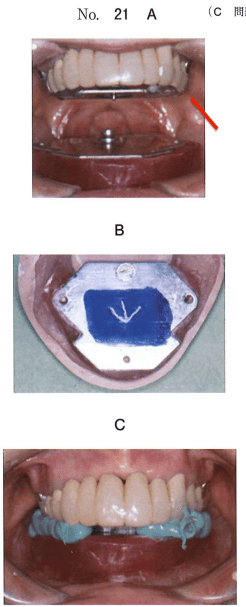
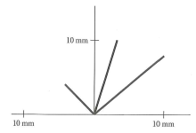
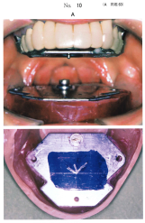
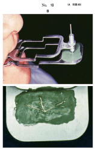

天然歯の喪失によって口腔内に生じた上下顎の顎堤間の空間をデンチャースペース（denture space）という。この空間に義歯を製作する。
| 年 | 報告者 | 名称 |
|---|---|---|
| 1937 | Fish | デッドスペース（dead space） |
| 1956 | Lammie | ニュートラルゾーン（neutral zone） |
| 1961 | Matthews | ゾーンオブミニマルコンフリクト |
頬筋、口輪筋、内舌筋、モダイオラスなど。これらは主として義歯研磨面形態と調和して維持・安定に寄与する。
咬筋、オトガイ筋、オトガイ舌筋、顎舌骨筋、内側翼突筋、口蓋舌筋、茎突舌筋、上唇を動かす筋群など。これらは人工歯排列や床縁形態との不調和時に脱離要因となりやすく、前庭・舌側溝形態の設定に影響する。
筋圧中立帯において、舌圧・頬圧が相殺され、義歯の脱離傾向が最小になる空間。この領域に人工歯を排列することで、義歯の安定が得られる。
デンチャースペースを記録する代表的な方法として、以下がある。
1964年にBeresinとSchiesserがLammieの報告したニュートラルゾーンを記録する術式として開発した。モデリングコンパウンドを記録材料として使用する。
1966年にLottとLevinがFishの原理をもとに開発。義歯床研磨面や人工歯の唇・頬・舌面を周囲組織の動態と調和した位置ならびに形態に形成する方法。
1974年にフランスのKleinが考案。患者固有の発音時に生じる筋圧を流動性の高い軟性材料で記録することにより、デンチャースペースを記録する方法。
人工歯が適正な位置に排列されると、口唇圧と舌圧で義歯の維持・安定は増強される。
半調節性咬合器を用いた全部床義歯製作過程のある操作の写真（別冊No.10A、B、C）を別に示す。
次に行うのはどれか。1つ選べ。

【解説】ゴシックアーチ描記後、水平的顎間関係を記録した咬合床を用いて下顎作業模型を咬合器に再装着する。上顎模型はフェイスボウで先に装着されている。
下顎に描記板を設置し、ゴシックアーチを描記した図を示す。
運動制限を受けている下顎頭と開口路の偏位方向の組合せで正しいのはどれか。1つ選べ。

【解説】ゴシックアーチ描記図で左側への側方運動路が短い場合、右側の下顎頭の運動制限が疑われる。開口時には運動制限のある側（右側）に偏位する。
2種類の顎間関係記録装置の写真（別冊No.10A、B）を別に示す。
10Aと比較した10Bの特徴で正しいのはどれか。2つ選べ。


【解説】写真Aは口内描記法、Bは口外描記法。口外描記法は口内描記法と比較して、側方運動路が拡大して描記され、術者が運動軌跡を直視できる利点がある。一方、安定性は口内描記法が優れる。